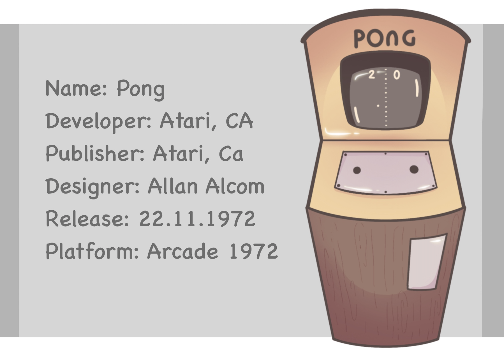
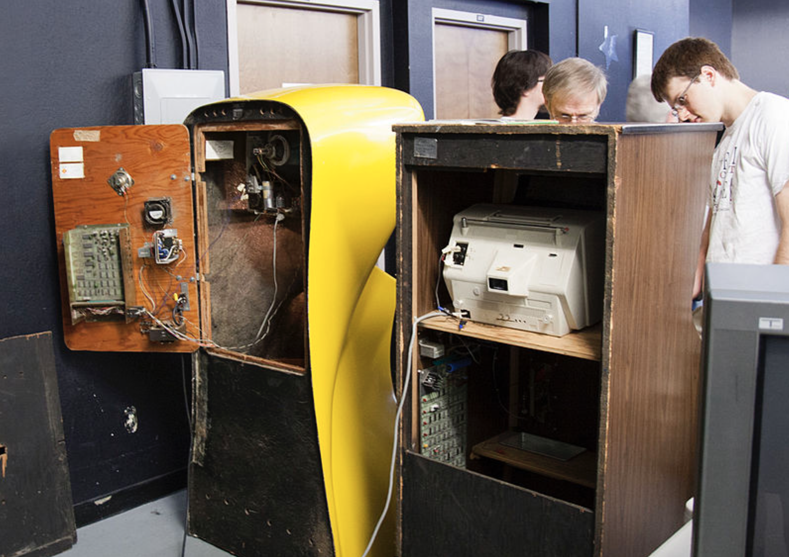
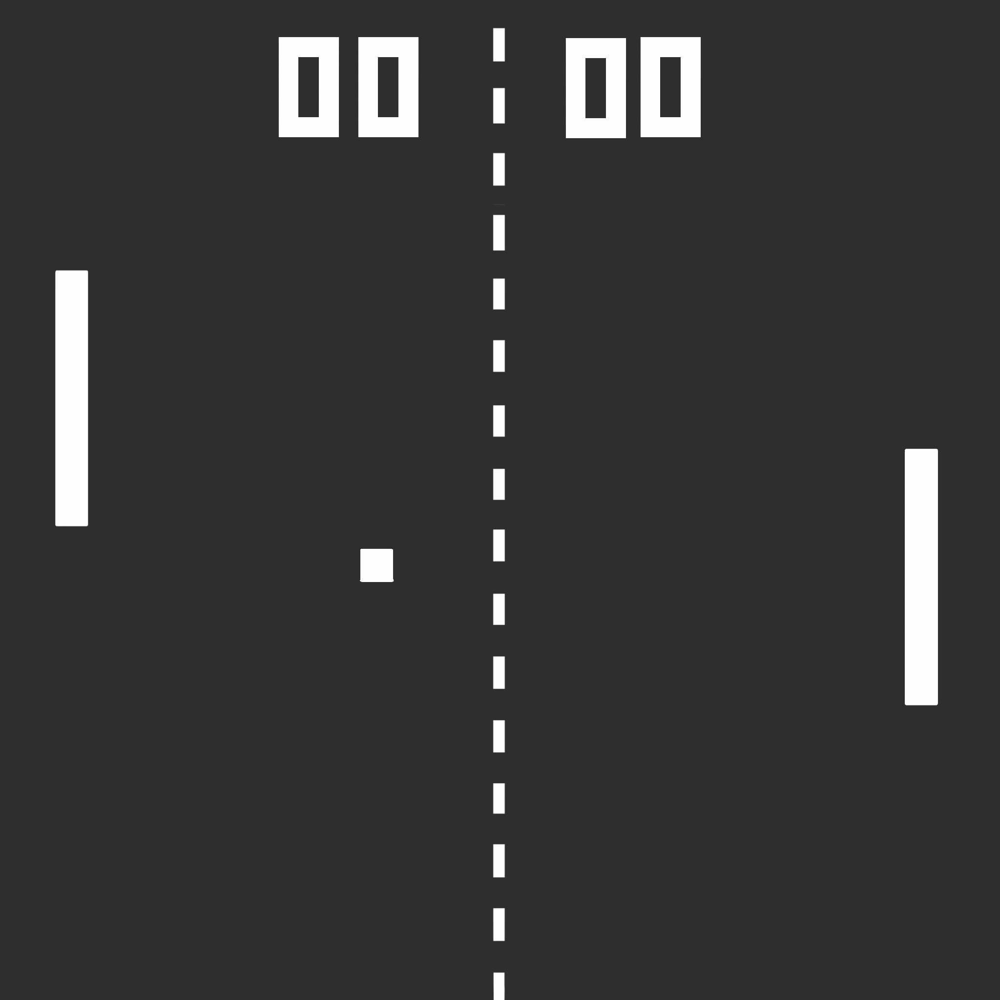
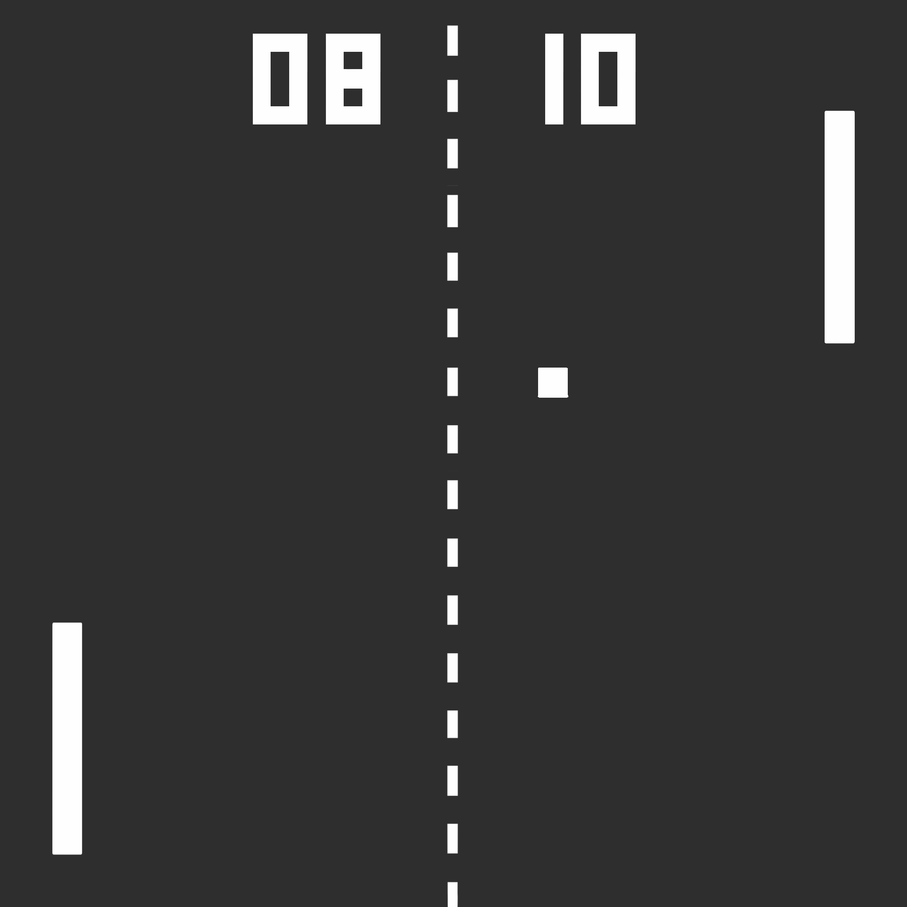

Pong
The Big Bang of video games dates back to the 1970s. In 1972 was born Pong produced by Atari, considered the father of all video games for its great mass success. Pong started the development of the video game industry. 
History
Pong is considered the first real arcade in history. The game is a simplified version of ping pong (or table tennis). Produced by Atari, it was put on the market on 29 November 1972,
Pong was born from the initiative of two American engineers, Nolan Bushnell and Ted Dabney. Nolan Bushnell, was fascinated by videogames, particularly Spacewar developed in 1962 by students from MIT, including Steve Russel.
Bushnell was convinced of the commercial potential of video games and in 1971 he and Ted Dabney founded Syzygy Engineering, a small software house. They developed a video game similar to Spacewar and named it Computer Space, distributed from November 1971 by Nutting Associates. The game was not a great success. In 1972 Nolan and Ted changed the name of the company to Atari and hired Allan Alcorn, an electronic engineer who played a key role in the development of Pong. Interestingly enough, in Japanese, the word "ataru" means "hitting the target".

Bushnell participated in the summer of 1972 in the presentation of the Magnavox Odissey console and was fascinated by it. He asked Alcorn to make a game that would interest the public. To do so, it had to be simple to play, innovative and captivating. Since Alcorn was not a video game expert, he suggested that he develop an arcade version of the tennis game. Lying, he told him that he had obtained a contract with General Eletric to make the video game. The requirements were few: it had to contain a moving ball, two rackets and a scoreboard. Alcon worked hard to make a good impression and in three months he made the first version of Pong.
The screen was divided by a dotted line. The background was black with two vertical bars on the sides acting as rackets. His instructions were simple: "Avoid missing ball for high score". The aim was to pass the opponent's bat with the ball that in the first PONGs was a pixel. If the player was missing the rebutton, a point was awarded to the opponent. At the top of the screen there was a number representing the score. You could play against the computer or challenge a friend.


The three members built a cabin cruiser capable of holding the game and to test its commercial potential they put it in a local bar, Andy Capp's Cavern in Sunnyvale, which was their favourite. In a few days Pong turned out to be an incredible success. Atari immediately began large-scale production and the game was released on 29th November 1972. At the end of 1974 Atari sold more than 8,000 units and exported all over the world. With Pong, the video game industry was born.
Thanks to Pong, Atari became the market leader in digital entertainment until the 1980s. Between 1974 and 1976, Steve Jobs and Steve Wozniak used disassembled parts from consoles and other Atari devices, and with the fundamental help of several engineers from the Bushnell-based company, they were able to build their first personal computer and found their company, Apple. In 1976 Steve Jobs asked Bushnell if he wanted to buy 33% of the company's shares for $50,000. Bushnell refused. Following the 1983 video game crisis, Atari was closed on 1 July 1984 and divided into two separate companies: Atari Corporation and Atari Games.

Features
When Pong was designed, the graphics were not based on matrices or pixels. Scanning lines (lines into which an image is divided: a strip of pixels) were used for programming. All the contacts (ball-stick and ball-border) were handled by the gates (and, or, ...). Several features contributed to the success of PONG:
- It's the first arcade video game called "coin-op", that is, it runs on coins (usually a quarter).
- For the first time a video game is accessible to everyone at a low cost. The playability was simple.
- It was possible to give effects to the shot by hitting the ball at the last moment, which gave more chances to score point.